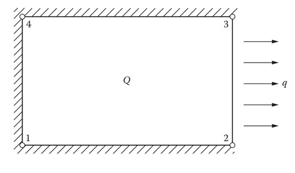

Plantearemos la ecuación de conducción usando el elmento cuadrilatero bilineal. La ecuación de comportamiento es:
$$-\dfrac {\partial} {\partial x} \left( K \dfrac {\partial T} {\partial x} \right)-\dfrac {\partial} {\partial y} \left( K \dfrac {\partial T} {\partial y} \right) = Q$$La condición de flujo constante en la frontera como:
$$- K \left( \dfrac {\partial T} {\partial x} n_x + \dfrac {\partial T} {\partial y} n_y \right) = q$$donde $n_x$ y $n_y$ son los cosenos directores del vector normal a la frontera.
Usando el mismo procediento que utilizamos para el elemento triangular, la ecuación de residuos ponderados es:
$$\int\limits_{\Omega} W \left[ -\dfrac {\partial} {\partial x} \left( K \dfrac {\partial T} {\partial x} \right)-\dfrac {\partial} {\partial y} \left( K \dfrac {\partial T} {\partial y} \right) - Q \right] d\Omega = 0 $$Aplicamos el teorema de Green para obtener:
$$\int\limits_{\Omega} \left[ K \dfrac {\partial W} {\partial x} \dfrac {\partial T} {\partial x} + K \dfrac {\partial W} {\partial y} \dfrac {\partial T} {\partial y} - WQ \right] dxdy + \int\limits_{\Gamma_B} - KW \left( \dfrac {\partial T} {\partial x} n_x + \dfrac {\partial T} {\partial y} n_y \right) d \Gamma = 0 $$Aproximamos la solución usando funciones bilineales:
$$T=\sum_{i=1}^4 N_i T_i$$Y establecemos $W = N_i$, según la metodología de Galerkin.
La expresión anterior se convierte en:
$$\left[ \int\limits_{\Omega} \left( K \dfrac {\partial N_i} {\partial x} \dfrac {\partial N_j} {\partial x} + K \dfrac {\partial N_i} {\partial y} \dfrac {\partial N_j} {\partial y} \right) dxdy \right] T_j = \left[ \int\limits_{\Omega} N_i Q dxdy - \int\limits_{\Gamma_B} N_i q d \Gamma \right] $$Ahora transformamos la ecuación para usar las coordenadas naturales $\xi$ y $\eta$. La temperatura será:
$$T(\xi,\eta) = \sum_{i=1}^4 N_i(\xi,\eta) T_i$$La primera derivada la podemos obtener usando:
$$\begin{bmatrix} \dfrac {\partial N_i} {\partial x} \\ \dfrac {\partial N_i} {\partial y}\end{bmatrix} = \mathbf{J}^{-1}\begin{bmatrix} \dfrac {\partial N_i} {\partial \xi} \\ \dfrac {\partial N_i} {\partial \eta}\end{bmatrix} $$Donde el el Jacobiano es:
$$\mathbf{J} = \begin{bmatrix} \dfrac {\partial x}{\partial \xi}&\dfrac {\partial y}{\partial \xi} \\ \dfrac {\partial x}{\partial \eta}&\dfrac {\partial y}{\partial \eta} \end{bmatrix} = \begin{bmatrix} J_{11} & J_{21} \\ J_{12} & J_{22} \end{bmatrix} = \dfrac {1} {2} \begin{bmatrix} x_2-x_1 & 0 \\ 0 & y_4-y_1 \end{bmatrix}$$La inversa del Jacobiano es:
$$\mathbf{J}^{-1} = \dfrac {1} {|\mathbf{J}|} \begin{bmatrix} J_{22} & -J_{12} \\ -J_{21} & J_{11} \end{bmatrix}$$Con:
$$|\mathbf{J}| = J_{11}J_{22} - J_{12}J_{21}$$Con este cambio de variable nuestra ecuación se convierte en:
$$\int\limits_{-1}^{1}\int\limits_{-1}^{1} K \left[ \left( \dfrac {\partial N_i} {\partial \xi} \dfrac {\partial \xi} {\partial x} + \dfrac {\partial N_i} {\partial \eta} \dfrac {\partial \eta} {\partial x} \right) \left( \dfrac {\partial N_j} {\partial \xi} \dfrac {\partial \xi} {\partial x} + \dfrac {\partial N_j} {\partial \eta} \dfrac {\partial \eta} {\partial x} \right) + \left( \dfrac {\partial N_i} {\partial \xi} \dfrac {\partial \xi} {\partial y} + \dfrac {\partial N_i} {\partial \eta} \dfrac {\partial \eta} {\partial y} \right) \left( \dfrac {\partial N_j} {\partial \xi} \dfrac {\partial \xi} {\partial y} + \dfrac {\partial N_j} {\partial \eta} \dfrac {\partial \eta} {\partial y} \right)\right] |\mathbf{J}| d\xi d\eta [ T_j ]$$$$ = \int\limits_{-1}^{1}\int\limits_{-1}^{1} Q N_i |\mathbf{J}| d\xi d\eta - \int\limits_{\Gamma} q N_i d \Gamma $$Esta es la expresión general de estado estable para un elemento con generación y con flujo constante.
Ejemplo:
Plantea las ecuaciones matriciales para el siguiente elemento:
(Nota: este ejemplo se diferencía del ejemplo 5.2 del libro porque aqui se utilizan coordenadas naturales.)

Solución:
Las funciones de forma son:
$$N_1 = \dfrac {1} {4}\left(1-\xi \right)\left(1-\eta \right)$$$$N_2 = \dfrac {1} {4}\left(1+\xi \right)\left(1-\eta \right)$$$$N_3 = \dfrac {1} {4}\left(1+\xi \right)\left(1+\eta \right)$$$$N_4 = \dfrac {1} {4}\left(1-\xi \right)\left(1+\eta \right)$$Resolveremos el sistema:
$$\int\limits_{-1}^{1}\int\limits_{-1}^{1} \left[ K \left( \dfrac {\partial N_i} {\partial \xi} \dfrac {\partial \xi} {\partial x} + \dfrac {\partial N_i} {\partial \eta} \dfrac {\partial \eta} {\partial y} \right) \left( \dfrac {\partial N_j} {\partial \xi} \dfrac {\partial \xi} {\partial x} + \dfrac {\partial N_j} {\partial \eta} \dfrac {\partial \eta} {\partial y} \right)\right] |\mathbf{J}| d\xi d\eta [ T_j ]$$$$ = \int\limits_{-1}^{1}\int\limits_{-1}^{1} Q N_i |\mathbf{J}| d\xi d\eta - \int\limits_{\Gamma} q N_i d \Gamma $$Las coordenadas $x$ y $y$ se pueden obtener utilizando:
$$x = b \xi + x_c = \dfrac {1} {2} (x_2-x_1) \xi + \dfrac {1} {2} (x_1 +x_2)$$$$y = a \eta + y_c = \dfrac {1} {2} (y_4-y_1) \eta + \dfrac {1} {2} (y_1 +y_4)$$Por lo que el Jacobiano resulta:
$$\mathbf{J} = \begin{bmatrix} \dfrac {\partial x}{\partial \xi}&\dfrac {\partial y}{\partial \xi} \\ \dfrac {\partial x}{\partial \eta}&\dfrac {\partial y}{\partial \eta} \end{bmatrix} = \begin{bmatrix} J_{11} & J_{21} \\ J_{12} & J_{22} \end{bmatrix} = \begin{bmatrix} b & 0 \\ 0 & a \end{bmatrix}$$Las derivadas de las funciones de forma respecto a $x$ y $y$:
$$\begin{bmatrix} \dfrac {\partial N_1} {\partial x} \\ \dfrac {\partial N_1} {\partial y}\end{bmatrix} = \mathbf{J}^{-1}\begin{bmatrix} \dfrac {\partial N_1} {\partial \xi} \\ \dfrac {\partial N_1} {\partial \eta}\end{bmatrix} = \dfrac {1} {4ab} \begin{bmatrix} a & 0 \\ 0 & b \end{bmatrix} \begin{bmatrix} \eta-1 \\ \xi -1 \end{bmatrix} = \left[\begin{matrix} \dfrac {\eta- 1}{4b} \\ \dfrac {\xi - 1} {4a}\end{matrix}\right]$$Para obtener la Matriz de conductividad $\mathbf{K}$ y tomando en cuenta de que se trata de un elmento rectangular ($\partial \eta / \partial x = 0$ y $\partial \xi / \partial y = 0$) por lo que:
$$\left( \dfrac {\partial N_i} {\partial \xi} \dfrac {\partial \xi} {\partial x} + \dfrac {\partial N_i} {\partial \eta} \dfrac {\partial \eta} {\partial x} \right) \left( \dfrac {\partial N_j} {\partial \xi} \dfrac {\partial \xi} {\partial x} + \dfrac {\partial N_j} {\partial \eta} \dfrac {\partial \eta} {\partial x} \right)= \dfrac {\partial N_i} {\partial x} \dfrac {\partial N_j} {\partial x} $$y:
$$\left( \dfrac {\partial N_i} {\partial \xi} \dfrac {\partial \xi} {\partial y} + \dfrac {\partial N_i} {\partial \eta} \dfrac {\partial \eta} {\partial y} \right) \left( \dfrac {\partial N_j} {\partial \xi} \dfrac {\partial \xi} {\partial y} + \dfrac {\partial N_j} {\partial \eta} \dfrac {\partial \eta} {\partial y} \right) = \dfrac {\partial N_i} {\partial y} \dfrac {\partial N_j} {\partial y} $$El primer producto es igual a:
$$\left( \dfrac {\partial N_i} {\partial x} \dfrac {\partial N_j} {\partial x} \right)= \dfrac {1} {16 b^2}\begin{bmatrix}\left(\eta - 1\right)^{2} & \left(1 - \eta\right) \left(\eta - 1\right) & \left(\eta - 1\right) \left(\eta + 1\right) & \left(- \eta - 1\right) \left(\eta - 1\right)\\\left(1 - \eta\right) \left(\eta - 1\right) & \left(1 - \eta\right)^{2} & \left(1 - \eta\right) \left(\eta + 1\right) & \left(1 - \eta\right) \left(- \eta - 1\right)\\\left(\eta - 1\right) \left(\eta + 1\right) & \left(1 - \eta\right) \left(\eta + 1\right) & \left(\eta + 1\right)^{2} & \left(- \eta - 1\right) \left(\eta + 1\right)\\\left(- \eta - 1\right) \left(\eta - 1\right) & \left(1 - \eta\right) \left(- \eta - 1\right) & \left(- \eta - 1\right) \left(\eta + 1\right) & \left(- \eta - 1\right)^{2}\end{bmatrix}$$Calculando la interal:
$$\dfrac {K|\mathbf{J}|} {16 b^2} \int\limits_{-1}^{1}\int\limits_{-1}^{1}\begin{bmatrix}\left(\eta - 1\right)^{2} & \left(1 - \eta\right) \left(\eta - 1\right) & \left(\eta - 1\right) \left(\eta + 1\right) & \left(- \eta - 1\right) \left(\eta - 1\right)\\\left(1 - \eta\right) \left(\eta - 1\right) & \left(1 - \eta\right)^{2} & \left(1 - \eta\right) \left(\eta + 1\right) & \left(1 - \eta\right) \left(- \eta - 1\right)\\\left(\eta - 1\right) \left(\eta + 1\right) & \left(1 - \eta\right) \left(\eta + 1\right) & \left(\eta + 1\right)^{2} & \left(- \eta - 1\right) \left(\eta + 1\right)\\\left(- \eta - 1\right) \left(\eta - 1\right) & \left(1 - \eta\right) \left(- \eta - 1\right) & \left(- \eta - 1\right) \left(\eta + 1\right) & \left(- \eta - 1\right)^{2}\end{bmatrix} d\xi d\eta=$$Para el segundo producto tenemos:
$$\left( \dfrac {\partial N_i} {\partial y} \dfrac {\partial N_j} {\partial y} \right)=\dfrac {1} {16 a^2} \begin{bmatrix}\left(\xi - 1\right)^{2} & \left(- \xi - 1\right) \left(\xi - 1\right) & \left(\xi - 1\right) \left(\xi + 1\right) & \left(1 - \xi\right) \left(\xi - 1\right)\\\left(- \xi - 1\right) \left(\xi - 1\right) & \left(- \xi - 1\right)^{2} & \left(- \xi - 1\right) \left(\xi + 1\right) & \left(1 - \xi\right) \left(- \xi - 1\right)\\\left(\xi - 1\right) \left(\xi + 1\right) & \left(- \xi - 1\right) \left(\xi + 1\right) & \left(\xi + 1\right)^{2} & \left(1 - \xi\right) \left(\xi + 1\right)\\\left(1 - \xi\right) \left(\xi - 1\right) & \left(1 - \xi\right) \left(- \xi - 1\right) & \left(1 - \xi\right) \left(\xi + 1\right) & \left(1 - \xi\right)^{2}\end{bmatrix}$$Calculando la integral:
$$\dfrac {K|\mathbf{J}|} {16 b^2} \int\limits_{-1}^{1}\int\limits_{-1}^{1}\begin{bmatrix}\left(\xi - 1\right)^{2} & \left(- \xi - 1\right) \left(\xi - 1\right) & \left(\xi - 1\right) \left(\xi + 1\right) & \left(1 - \xi\right) \left(\xi - 1\right)\\\left(- \xi - 1\right) \left(\xi - 1\right) & \left(- \xi - 1\right)^{2} & \left(- \xi - 1\right) \left(\xi + 1\right) & \left(1 - \xi\right) \left(- \xi - 1\right)\\\left(\xi - 1\right) \left(\xi + 1\right) & \left(- \xi - 1\right) \left(\xi + 1\right) & \left(\xi + 1\right)^{2} & \left(1 - \xi\right) \left(\xi + 1\right)\\\left(1 - \xi\right) \left(\xi - 1\right) & \left(1 - \xi\right) \left(- \xi - 1\right) & \left(1 - \xi\right) \left(\xi + 1\right) & \left(1 - \xi\right)^{2}\end{bmatrix} d\xi d\eta=$$Para el término de Generación:
$$\int\limits_{-1}^{1}\int\limits_{-1}^{1} Q N_i |\mathbf{J}| d\xi d\eta = $$Finalmente, para el Flujo en la frontera evaluaremos la integral:
$$\int\limits_{\Gamma} q N_i d \Gamma$$En este caso el flujo se da por la frontera a la derecha, donde $\xi = 1$. De tal manera:
$$\int\limits_{\Gamma} \frac{q}{4} \begin{bmatrix}\left(1 - 1\right) \left(1 - \eta\right)\\\left(1 + 1\right) \left(1 - \eta\right) \\\left(1 +1\right) \left(\eta + 1\right) \\\left(1-1\right) \left(\eta + 1\right)\end{bmatrix} d \Gamma$$Para hacer el cambio de variable usamos:
$$\partial \Gamma = |\mathbf{J}| \partial \eta$$En este caso, al tratarse de la frontera $\Gamma_{2-3}$ tenemos que:
$$|\mathbf{J}| = \dfrac {d\Gamma} {d\eta} = \ell_{2-3} = 2 a$$$${d\Gamma} = 2 a {d\eta}$$Substituyendo en la integral:
$$\dfrac{2qa}{4} \int\limits_{-1}^{+1} \begin{bmatrix}0 \\ 2 \left(1 - \eta\right) \\2 \left(\eta + 1\right) \\ 0 \end{bmatrix} d \eta$$Así, el elemento queda:
$$\left( \dfrac {Ka} {6b} \begin{bmatrix}2 & -2 & -1 & 1\\-2 & 2 & 1 & -1\\-1 & 1 & 2 & -2\\1 & -1 & -2 & 2\end{bmatrix} + \dfrac {Kb} {6a} \begin{bmatrix}2 & 1 & -1 & -2\\1 & 2 & -2 & -1\\-1 & -2 & 2 & 1\\-2 & -1 & 1 & 2\end{bmatrix} \right) \begin{bmatrix} T_1 \\ T_2 \\ T_3 \\ T_4 \end{bmatrix} = Qab \begin{bmatrix} 1 \\ 1 \\ 1 \\ 1 \end{bmatrix} - aq \begin{bmatrix}0 \\ 1 \\ 1 \\ 0 \end{bmatrix}$$Siguiendo la mísma lógica de lo anterior obtenemos, para convección en la frontera 2-3:
$$\int\limits_{\ell_{2-3}} h N_i T d\Gamma = \dfrac {h \ell_{2-3}} {6} \begin{bmatrix} 0 & 0 & 0 & 0 \\ 0 & 2 & 1 & 0 \\ 0 & 1 & 2 & 0 \\ 0 & 0 & 0 & 0 \end{bmatrix} \begin{bmatrix} T_1 \\ T_2 \\ T_3 \\ T_4 \end{bmatrix}$$Que tendrá que ser adicionado a la matriz $\mathbf{K}$.
Y, del lado del vector de fuerza $\mathbf{F}$:
$$ - h T_\infty \int\limits_{\Gamma} N_1 d\Gamma = - \dfrac {hT_\infty\ell_{2-3}} {2} \begin{bmatrix}0 \\ 1 \\ 1 \\ 0 \end{bmatrix}$$